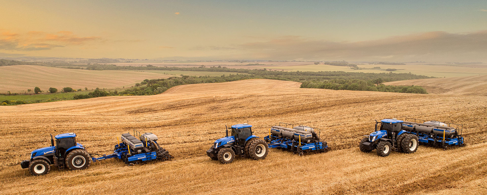
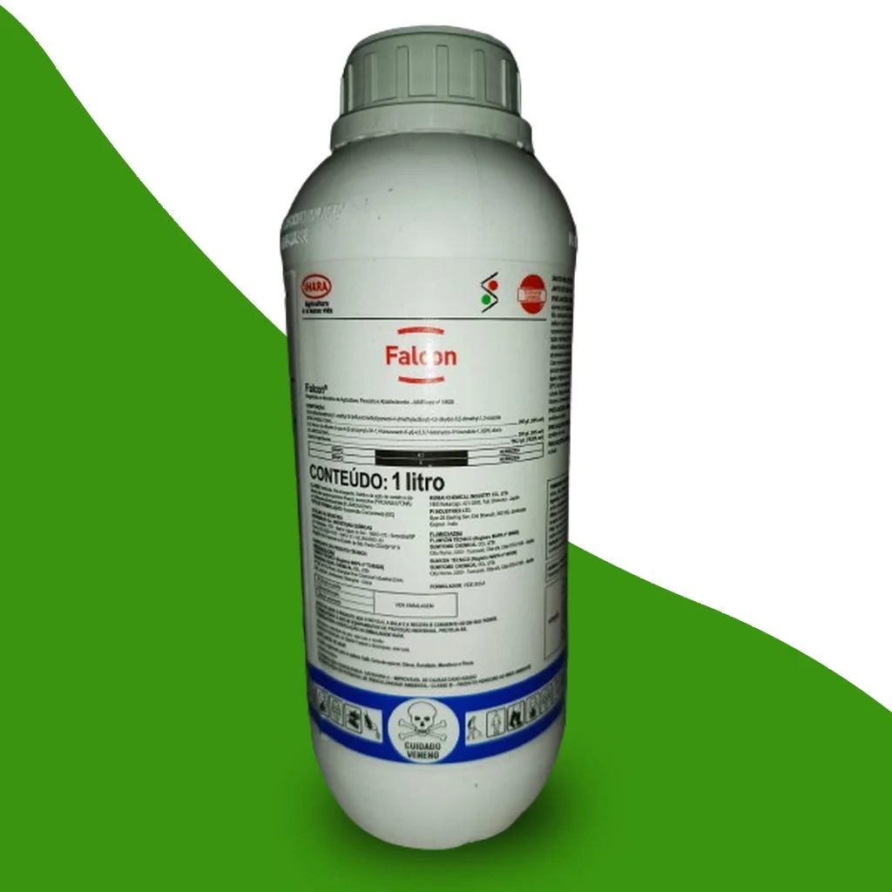
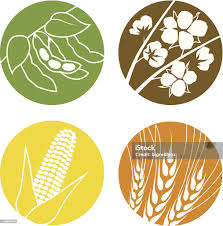
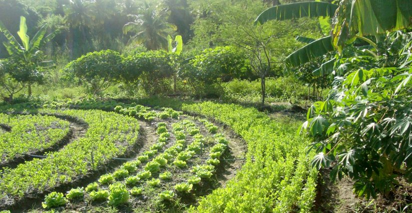
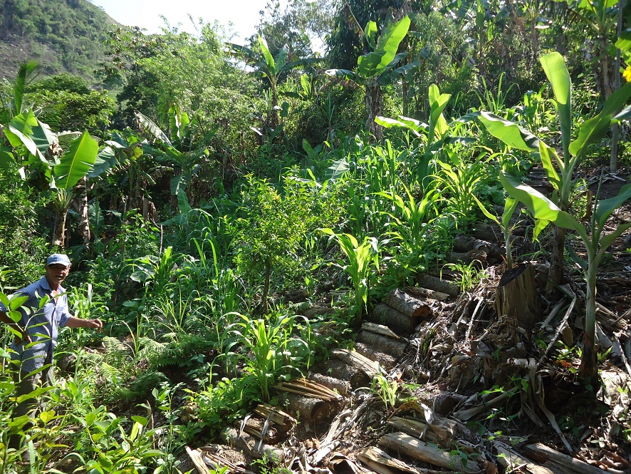

<!doctype html >
<html lang = "pt-br" >
</html>
<head >
<meta charset = "utf-8">
<link rel="styleshut" heaf= style.css>
tecagro 
</head>
<body>
    Tecagricola
o site condiz com ajudar o agricultor na hora de seu plantio,aplicaçoẽs de produtos
 agricola,colheitas etc mostrando a produtividade 
e com certas aplicaçoẽs mostrando com numeros e graficos oq aconteceu durante 
o ano de produção

</body>
    O site sera equipado com calendario paa indicar o melhor tempo posivel des de a planta a
 colheita isso inclue adubação e aplicaçoẽs de defensivos agricola.
 

     Quando chegar perto da data indicada para plantios o usuario do 
     site sera avisado.
     Comforme a data de plantio o site ira rever as melhores datas para as aplicações 
     ja que nele tambem tera informaçoẽs por satelite 
     junto com a previao do tempo que tem que estar tudo ok para aplicaçoẽs de erbicidas 
     e inceticidas 
     
     
     o site trablhara com a maioria de sementes que vao na terra.
     
     
     com uma nova atualização o site tambem funcionara com frutos e com agrofloresta 
     
     
     ajudando o agrucultor a plantar em epocas certas a tambem a largura que cada planta precisa
     junto informando quais plantas podem ficar lado a lado comforme sua data de produção
     e seu crecimento 
     tmbem ira mostrar produção com graficos e planilhas para o agricultor tirar suas proprias
     conclusoẽs.
    
    <img src="etratificação agrofloresta .jpeg"
